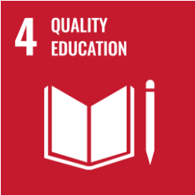
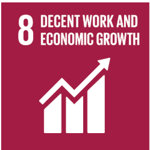
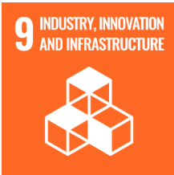

Our interactions with the local academic and agricultural community have largely shaped our ideation journey. The journey began with us looking for a problem statement that impacts the real world, facing our problems with various ideas, navigating our way through these problems and finally arriving at a solution to address the problem statement itself. Our aim has always been to benefit the local population and make a positive global impact.
Initially, the team worked on multiple projects, primarily involving agriculture. Our initial idea revolved around nitrogen fixation and aimed to enhance Nitrogen Fixation in Rice crops by genetically modifying a soil microbe. Upon consulting experts in the field and through research, we found commercial products that had already dealt with the problem. This helped us pivot into our next project involving ‘Koleroga’, a fungal disease affecting arecanut palms. Our meetings with previous IGEM participants and their previously conducted research gave us insight into the difficulties faced in identifying the exact strain of the pathogen and the difficulty in applying our proposed solution. However, these interactions gave us an insight into the massive problem of fungal diseases affecting different plantations and it inspired us to further look into finding solutions for these diseases. The team went straight to the source and contacted an owner of the mango orchard and a former farmer to guide us further. We looked into Mango anthracnose and Cashew powdery mildew, both fungal diseases affecting the plants. On consulting with professors, we were unable to overcome issues of specificity of the pathogen, which led us to work on Sugarcane Top Borer. The project targeted their reproductive cycle by combatting Chilo Infuscatellus infestations in Sugarcane crops. Various inputs from fellow team members led us to realise the lack of novelty in our solution, thus prompting us to choose a different project.
With our past projects, we scheduled a field visit to Narayan Prasad Rice Mill, Barkur, to speak directly to the people involved in the processing of rice crops. We hoped to gather their views on the cultivation of rice and their knowledge of nitrogen fixation affecting the growth of rice crops. We also contacted Ashok Thale, an owner of a mango orchard and a former farmer who helped us with the logistics of how many mango trees were affected with fungal disease in the region of Alibaug and provided information on the fungicides that the farmers in the village of Zhalkhand in Alibaug.
Identifying our stakeholders in relation to Sandalwood Spike Disease was essential to us. Our stakeholders include:
As part of our current project to address SSD, we hope to contact the general public to gauge their knowledge of sandalwood cultivation, production and manufacture. In order to do so, we plan to conduct a survey targeting a wide range of people, including primary users of sandalwood products as well as non-common consumers of the same. This will provide us with details on the impact of knowledge of sandalwood production and the effect of SSD precisely. We hope to ask questions about using chemical fertilizers, genetic modification, and SynBio as a solution. These interactions will help us determine the true impact of our project on the real world with consumers of Sandalwood. We will also be able to gauge the impact of our solution and preserving Sandalwood in the future. We plan on contacting small businesses that use sandalwood to create various products such as fragrances, cosmetics, etc, and to gather their understanding of the disease and the impact it can have on their small businesses economically.
As we progress with our project to control Sandalwood Spike Disease (SSD) in Sandalwood trees, we aim to align our project with the following Sustainable Development Goals.
Quality Education
Our future educational outreach aims to impact students ages 10-15 across India, including Karnataka and Tamil Nadu, the significant states for sandalwood plantations. We want to educate students on how sandalwood culturally and economically impacts India and the world. We would also educate on biotechnology principles, sustainable agriculture, environment science, and conservation. This would include hands-on experiences, talks and seminars designed for middle and high school students.
Decent Work and Economic Growth
Due to Sandalwood Spike Disease, the economic loss of sandalwood is high. This primarily affects farmers the hardest, and our project aims to help them eradicate this problem. The only way to resolve SSD is by manually removing it from the tree every time it is seen or removing the tree itself. Our project is essential to prevent an epidemic like the one seen in Southern states of India from 1903-1916 and find a better alternative than killing the entire tree.
Industry, innovation and infrastructure
To successfully implement this project in the future, we plan to develop the necessary structure and infrastructure to help our product. This will give us a sustainable and more efficient method of combating SSD in the market that farmers can use.
Currently, our project aims to address Sandalwood Spike Disease efficiently with minimal harm caused to the surrounding environment. Our iHP journey has proved to be imperative for the selection of our final project.
We approached rice expert Mr. Shashikant Bhende to gain more insight into the issue at hand and the crop itself. Upon meeting, we gained significant knowledge about the impact of the problem and what the current measures exist to work around it. We told him the aim of our project, which was to increase nitrogen fixation in rice crops, upon which one of the significant inputs he provided us with was to make this approach wide variety crop-based and not simply limit it to rice crops since the problem persists in other major crops as well.
We met with Dr. Praveen Kumar early in our ideation journey, and he provided his input on what direction to take our synbio solution in to cure a fungal disease in Arecanut palms and to explore the idea of phytochemical compounds.
We contacted Dr. Srtiama Kundu for her expertise in agricultural biotechnology. She provided her insights on fungal diseases affecting agriculture and the feasibility of our potential solutions.
Reaching out to Aditi Balasubramani proved to be extremely helpful for the team. She provided her input regarding fungal diseases affecting Arecanut palms. During their task phase, she spoke about their team's research on the same plant and disease. These insights proved extremely helpful, and their research on copper fertilizers explicitly benefited our study.
Played an essential role in telling us the parameters we can look at while targeting one specific fungus and helped us select our model microorganism, which we could work with.
Provided his input on the various ways in which the cell wall of fungi could be targeted.
Spoke with KKV Mahesh Kulkarni regarding issues faced by cashews and mango, for which he showed us a list of diseases affecting the crops and the currently used control measures to deal with the spread of the diseases. He also provided details on various important crops and major diseases affecting them. He shared important papers that helped with our projects regarding the spread of fungi and information about how fungi affect crops.
Our iHP journey has played a crucial role in creating our solution and the project we finally decided to move forward with. This invaluable insight from experts in the field has led us to work with Sandalwood and make a positive change in the lives of those affected by the disease. In the near future, we hope to contact more people for their expert advice and thus improve our project with every step. Some of the contacts we plan on reaching out to include:
SPONSORS

CONTACT US
Email: manipalbiomachines.igem@gmail.com
Address: Project laboratory, Academic Block-2, Manipal Institute of Technology, MAHE, Eshwar Nagar, Manipal, Udupi, Karnataka, India - 576104